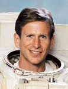

Lyndon B. Johnson Space Center
Houston, Texas 77058
|
National Aeronautics and Space Administration Lyndon B. Johnson Space Center Houston, Texas 77058 |
 |
Biographical Data |
||
Michael L. Gernhardt (Ph.D.)
NASA ASTRONAUT, Manager of Environmental Physiology Laboratory and Principle Investigator of Prebreath Reduction Program, Johnson Space Center
PERSONAL DATA: Born May 4, 1956, in Mansfield, Ohio. He enjoys running, swimming, flying, fishing, and scuba diving. His father, George M. Gernhardt is deceased. His mother, Suzanne C. Winters, resides in Whitestone, Virginia.
HONORS: NASA Space Flight Medals (4); Exceptional Service Medals (2); Exceptional Achievement Medal (1), Distinguished Service Medal (1)
EDUCATION: Graduated from Malabar High School, Mansfield, Ohio, in 1974. Received a Bachelor of Science degree in physics from Vanderbilt University in 1978, and a Master of Science degree and a doctorate in bioengineering from University of Pennsylvania, in 1983 and 1991, respectively.
ORGANIZATIONS: American Institute of Aeronautics and Astronautics (AIAA); Undersea and Hyperbaric Medical Society; Sea Space Symposium; Aerospace Medical Association.
EXPERIENCE: From 1977 to 1984, Gernhardt worked as a professional deep sea diver and project engineer on a variety of sub sea oil field construction and repair projects around the world. He has logged over 700 deep sea dives and has experience in air, mixed gas, bounce bell and saturation diving. During his diving career Gernhardt attended graduate school at the University of Pennsylvania and developed a new theoretical decompression model based on tissue gas bubble dynamics. He then participated in the development and field implementation of a variety of new decompression tables. From 1984 to 1988, Gernhardt worked as Manager and then Vice President of Special Projects for Oceaneering International. During this time he led the development of a telerobotic system for sub sea platform cleaning and inspection as well as a variety of new diver and robot tools. In 1988 he founded Oceaneering Space Systems, a company formed to transfer sub sea technology and operational experience to the ISS program. From 1988 until his selection by NASA in 1992, he worked on the development of new astronaut and robot-compatible tools for performing maintenance on Space Station Freedom. He also worked on the development of new portable life support systems and decompression procedures for extravehicular activity.
NASA EXPERIENCE: Dr. Gernhardt was selected by NASA in March 1992, and reported to the Johnson Space Center in August 1992. Technical assignments to date include: flight software verification in the Shuttle Avionics Integration Laboratory (SAIL); development of nitrox diving to support training for the Hubble Space Telescope repair and on a variety of Space Station EVA developments; member of the astronaut support team at Kennedy Space Center, Florida, responsible for Shuttle prelaunch vehicle checkout, crew ingress/egress; spacecraft communicator (CAPCOM) at Mission Control Center, Houston, during various Shuttle missions; lead an international research team in developing a new exercise prebreathe protocol that improved the safety and efficiency of space walks from the ISS. Gernhardt presently serves as a member of the astronaut office EVA branch, Project Scientist of the EVA Physiology System and Performance Project (EPSP), Manager of JSC’s Environmental Physiology Laboratory, and Project Manager of the Small Pressurize Rover project.
A four flight veteran, Dr. Gernhardt has logged over 43 days in space, including 4 spacewalks totaling 23 hours and 16 minutes. He was a mission specialist on STS-69 in 1995, STS-83 in 1997, STS-94 in 1997 and STS-104 in 2001. Additionally he was crewmember on the NEEMO (NASA Extreme Enviroment Mission Operations) One, and Commander of the NEEMO eight multi-day underwater missions. He also served as a submersible pilot on the Pavilion Lake Expedition focused on exploring a deep water lake in western Canada where unusual life forms called microbiolites have very recently been discovered.
SPACE FLIGHT EXPERIENCE: STS-69 (September 7-18, 1995) whose prime objective was the successful deployment and retrieval of a SPARTAN satellite and the Wake Shield Facility (WSF). The WSF was designed to evaluate the effectiveness of using this free-flying experiment to grow semiconductors, high temperature superconductors and other materials using the ultra-high vacuum created behind the spacecraft near the experiment package. Dr. Gernhardt was one of two astronauts to perform a spacewalk to evaluate future Space Station tools and hardware, logging 6 hours and 46 minutes of EVA. Mission duration was 260 hours, 29 minutes, and 8 seconds, traveling 4.5 million miles in 171 orbits of the Earth.
STS-83 (April 4-8, 1997) the Microgravity Science Laboratory ( MSL-1) Spacelab mission was cut short because of problems with one of the Shuttle’s three fuel cell power generation units. Mission duration was 95 hours and 12 minutes, traveling 1.5 million miles in 63 orbits of the Earth.
STS-94 (July 1-17, 1997) was a re-flight of the Microgravity Science Laboratory ( MSL-1) Spacelab mission, and focused on materials and combustion science research in microgravity. Mission duration was 376 hours and 45 minutes, traveling 6.3 million miles in 251 orbits of the Earth.
STS-104 (July 12-24, 2001) was the 10th mission to the International Space Station (ISS). During the 13-day flight the crew conducted joint operations with the Expedition-2 crew. Dr. Gernhardt was one of two astronauts to perform three spacewalks to install the joint airlock “Quest” (including the first US space walk from the ISS) and to outfit it with four high-pressure gas tanks. The mission was accomplished in 200 Earth orbits, traveling 5.3 million miles in 306 hours and 35 minutes.
JULY 2008